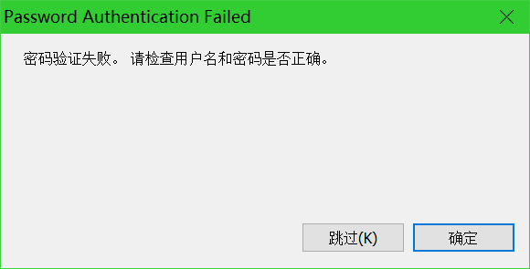
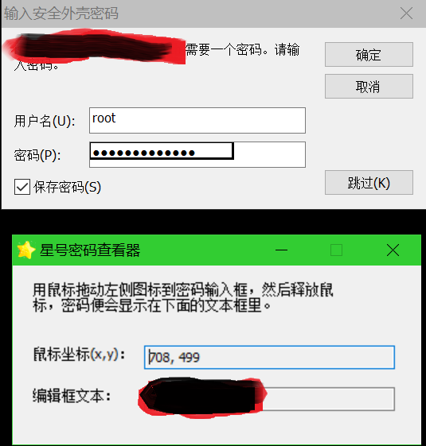
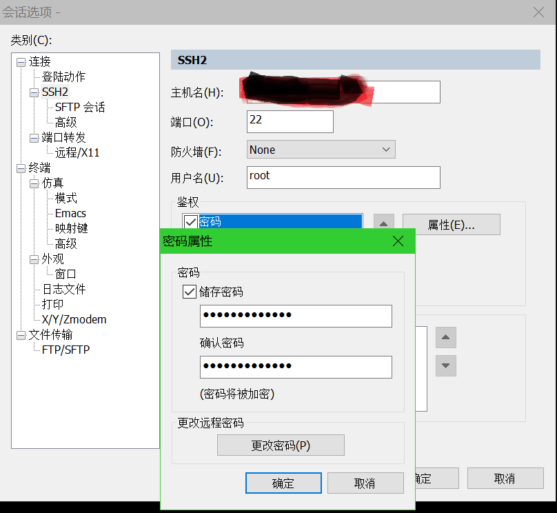

本文内容，在Windows 10 1803教育版（OS内部版本17134.829），SecureCRT 7.0.0 build 326上验证过。
使用SecureCRT保存了很多SSH会话，时间久了，密码都忘记了，虽然能自动登录，但有时还是需要使用密码。好在登录密码保存在SecureCRT的Session配置，于是有了找回的可能。
首先修改要找回主机的Host信息，改成另外一台主机，新改的主机，需要能够进行SSH连接，但登录用户名和密码要跟原来机器的不一样。如果Host处填的是个域名地址，而不是IP地址，那可以临时修改一下C:\Windows\System32\drivers\etc\hosts，让域名指向另一个IP即可。如果是IP地址，那就改成另一个能连接的IP地址吧。
改后了连接这个会话，因为密码错误，SecureCRT会弹出一个名为Password Authentication Failed的窗口，如下图：

点击确定，会弹出一个提示输入用户名和密码的对话框，显示了保存的用户名和密码，密码是用一串星号表示的，此时找一个星号密码查看软件，运行后，按提示操作，即可显示出星号处的明文文本：

注意：通过会话选项->鉴权->密码属性打开的对话框是不行的，如下图中的星号，是显示不出来密码的：
